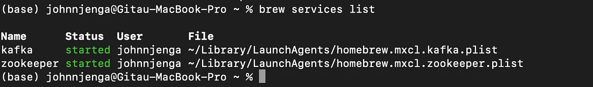
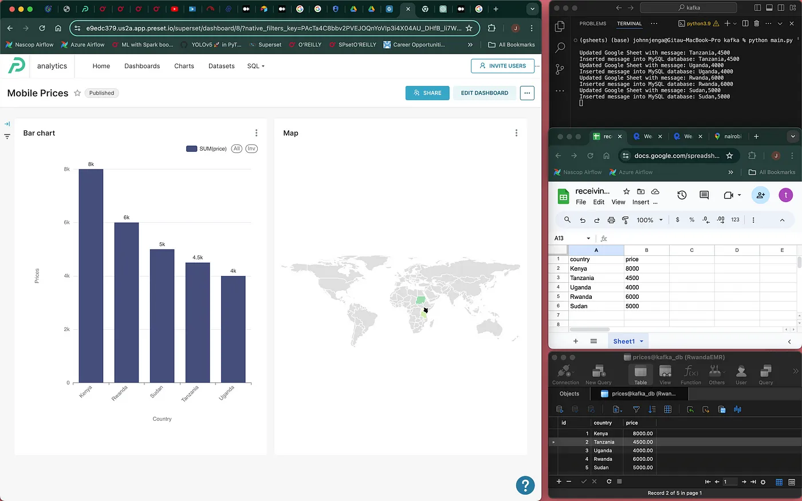

Unlocking Real-Time Data Insights: Integrating Kafka, MySQL, Google Sheets,Python and Apache Superset
In today’s data-driven world, the ability to efficiently process and analyze real-time data is crucial for many applications. Kafka is an open-source distributed event streaming platform. Kafka is used to build real-time streaming data pipelines and applications that adapt to the data streams. I will explore how to integrate Kafka, MySQL, and Google Sheets in Python and finally in Superset to create a robust data pipeline for real-time data processing and analysis.
1. SETTING UP APACHE KAFKA
A. brew install kafka

If you already have kafka in your local like me, you should see the message above. If not, kafka will be installed.
B. brew service start zookeeper
This command will start ZooKeeper as a background service on your system. If ZooKeeper is installed and configured correctly via Homebrew, this command should initiate the ZooKeeper service, allowing it to run in the background and serve as a coordination service for Kafka. To confirm whether the service is up, run brew services list.
C. brew service start kafka
To confirm whether the services(Kafka and zookeeper) are up, run brew services list.

D. create a topic
/usr/local/opt/kafka/bin/kafka-topics - create - bootstrap-server localhost:9092 - topic test
E. Starting the producer and the consumer respectively.
/usr/local/opt/kafka/bin/kafka-console-producer --topic test --bootstrap-server localhost:9092
/usr/local/opt/kafka/bin/kafka-console-consumer --topic test --bootstrap-server localhost:9092
F. Producing our first message and consuming it.
Final Product
